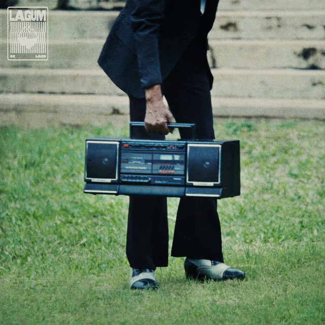
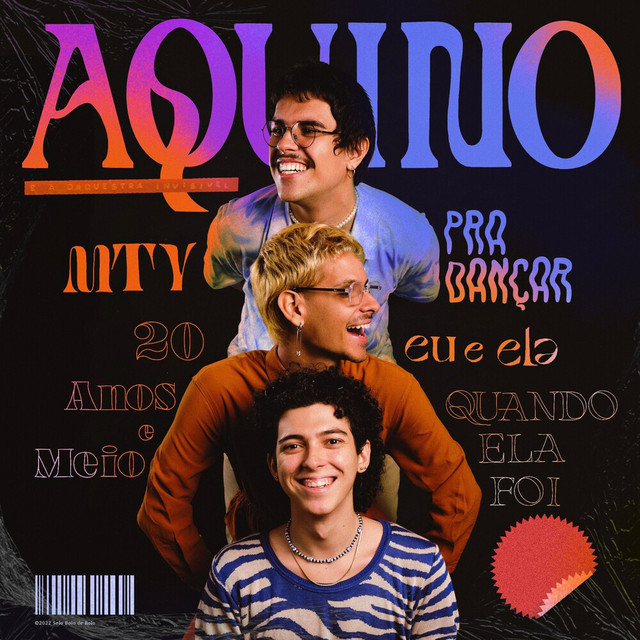
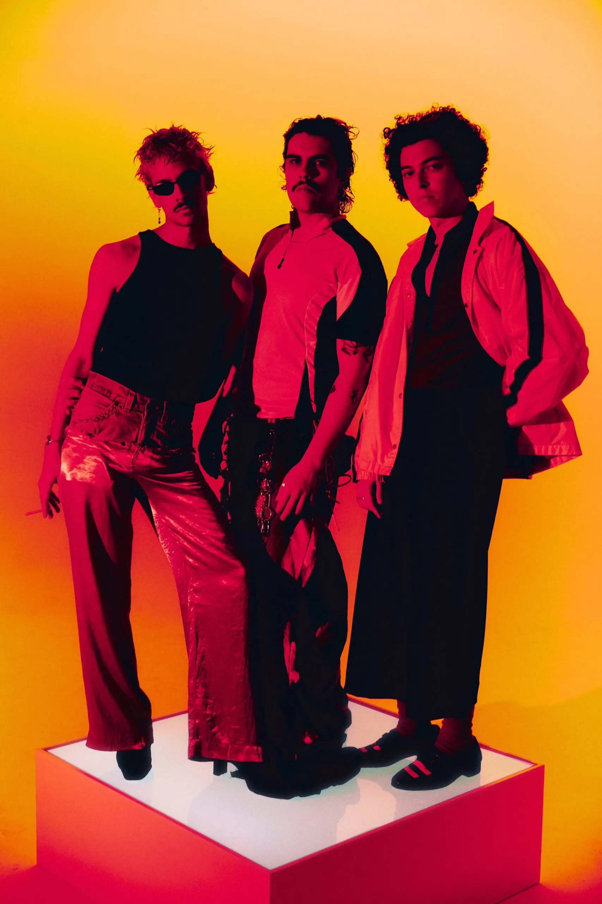
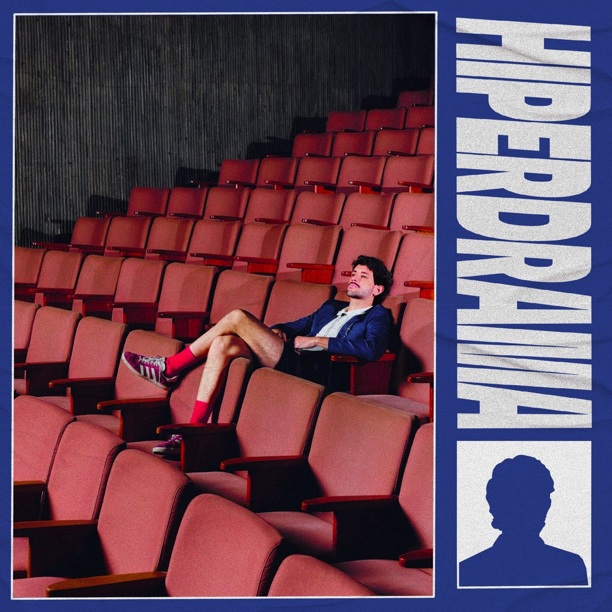

Não Existe Saudade em Inglês (2022-2025)

banda pequena
30/12/2025
status:
completo
"Você tá muito velho pra brincar de fingir ser quem não é."
Não Existe Saudade em Inglês é uma banda pequena e independente muito interessante. Bebe bastante do rock indie e do dito
"rock triste", aplicando muito bem os dois gêneros. A banda me traz uma sensação de mistura entre 'Jambu', 'O Grilo' e talvez um
pouco de 'Chão de Taco'. O EP autointitulado deles tem músicas com uma ótima vibe de fim de ano e rock triste, me remete bastante
ao final do meu ensino médio. Com destaque à 'Meu Sufoco', música que possui um verso com o nome da banda. Os singles mais recentes
lançados não são tão marcantes, mas ainda é uma banda que vale à pena.
Ouça 'Não Existe Saudade em Inglês'.
difícil - Chão de Taco (2023)

álbum/ep
24/12/2025
status:
completo
Chão de Taco - Chão de Taco (2021)

álbum/ep
24/12/2025
status:
completo
Rock triste em sua melhor forma.
Quarto Quieto - Indigans (2025)

album/ep
10/12/2025
status:
completo
"Em todas as escolhas eu errei."
Volto Amanhã - Besouro Mulher (2023)

album/ep
31/10/2025
status:
completo
"Seu olhos castanhos não são só seus."
Puta Merda.
O álbum começa comum com ótimas faixas e vocais. Tudo numa pegada mais animada, porém pensativa. No meio, temos faixas
mais lentas, ainda mais pensativas e bastante carregadas de significado. Apesar dos ritmos não tão marcantes, são ótimas músicas.
E ai o álbum acaba com a pedrada que é 'Seus Vazios'.
Eu não sei se eu tenho palavras pra descrever o impacto dessa música. O ritmo crescente e rápido durante a música não nos deixa respirar
enquanto a gente é bombardeado de vários versos, cada um mais impactante e carregado de significado que o anterior. A letra com melancolia
irremediável enquanto a música caminha pro seu fim que começa parado e depois explode. A emoção na voz da Sophia, o ritmo mantido, agora com
mais impacto. Até que a música acaba em uma repetição do verso "Seus olhos castanhos não são só seus.".
Tudo que eu escrevi é pouco para
descrever o que eu senti escutando. Não tenho dúvidas de que 'Seus Vazios' está entre minhas músicas favoritas.
Vai ouvir 'Besouro Mulher', rápido.
Depois do Carnaval - Besouro Mulher (2019)

album/ep
31/10/2025
status:
completo
"Aproveitou, xingou o guarda de 'filho da puta'."
Sophia Chablau novamente, dessa vez com um projeto um pouco mais antigo, 'Besouro Mulher'. QUE MÚSICAS DESSE PRIMEIRO EP, QUE MÚSICAS.
Absolutamente todas as músicas do EP são impuláveis, carregadas de ritmos cativantes, instrumentais fodas, vocais bonitos e letras
ótimas, todas elas a lá Sophia Chablau: aleatórias, mas profundas. Destaque especial para 'Danilo Baratão' com suas letras que apenas
musicistas como Sophia Chablau ou Ana Frango poderiam escrever.
Vai ouvir!!!!
Handycam - Sophia Chablau, Felipe Vaqueiro (2025)

album/ep
26/10/2025
status:
completo
"E cada um que tape o seu. Pois como eu, você tem tantos buracos pra tapar."
Nova empreitada da Sophia Chablau, agora com Felipe Vaqueiro. O álbum como um todo possui um tema mais abstrato e músicas mais
carregadas de significado e letra que me agrada bastante. Todas as músicas carregam muito peso emocional de diversas emoções
diferentes e é possível encontrar significado nos mais pequenos versos delas. Álbum incrivelmente inteligente e bem construído,
não tendo nenhuma música muito abaixo da outra. Destaque especial para 'Buracos', minha favorita pelo significado e pelo ritmo
catchy.
Ouça tudo que tem Sophia Chablau!!!!
Nessa cidade nada acontece - Sem Carne de Texugo (2025)

album/ep
22/10/2025
status:
completo
"Se eu te dissesse que eu não era assim. Que eu já fui algo que não fosse tão ruim."
Sem Carne de Texugo finalmente lançou um álbum/ep e que surpresa agradável! 'Nessa cidade nada acontece' é um ep composto por
5 músicas que transmitem exatamente a vibe da banda. A melancolia leve e despretensiosa com ótimo instrumental, típico de Curitiba.
O EP também apresenta 2 músicas cantadas em inglês que, apesar de serem um pouco abaixo do restante, possuem conceitos interessantes
e são boas músicas. Destaque especial para 'Nada Além', single lançado pouco antes do lançamento do álbum que carrega uma mensagem muito
bonita.
Ouça 'Sem Carne de Texugo'!!
Me Chama de Gato Que Eu Sou Sua - Ana Frango Elétrico (2023)

album/ep
06/10/2025
status:
completo
"É que eu sou Dr. Sabe Tudo. Discutindo o amor, não me iludo"
Tipo de música que eu faria se eu soubesse alguma coisa sobre música. Eu amo esse tipo de música MPB/Pop Psicodélico mais abstrata
e Ana Frango Elétrico fez isso com maestria nesse álbum. O mesmo passa por diversos estilos diferentes, o que faz com que escutar
o álbum seja sempre uma experiência nova apesar de você saber exatamente o que está por vir.
Todas as músicas desse álbum me
passam um conforto muito grande e muita inspiração. Também por algum motivo são músicas mais safadas que o funk mais pesado
o que eu pessoalmente acho bem lindo.
Ana Frango Elétrico!!!!!!!!!!!!!!!!!!!!
três tigres tristes - jonabug (2025)

album/ep
04/09/2025
status:
completo
big ego, no self esteem - jonabug (2023)

album/ep
01/09/2025
status:
completo
Julieta Social (2023-2025)

banda pequena
25/08/2025
status:
completo
"Eu só queria saber por que às vezes tudo que se cria é porcaria, é porcaria"
Mais um review de banda pequena e dessa vez com uma PEDRADA ABSURDA! Julieta Social apareceu pra mim no instagram de repente
em um anúncio de uma "review" de uma música e depois disso eu simplesmente esqueci o nome da banda por uns bons 2 meses. Finalmente
encontrei a banda novamente e pude ouvir todas as músicas e devo dizer que foi uma das melhores coisas que ouvi recentemente.
A própria descrição da banda diz que ela "nasce com pilares bem definidos, mas sem amarras fixas", fazendo sentido com os estilos
músicais diversos explorados pelas músicas da banda. Os singles "Nuvem Nua" e em especial "Casos de Colômbia" são MUITO bons com um
estilo próprio definido mas maleável. O ep que leva o nome da banda possue outras faixas muito legais como "Galoucura" e "Vestido" que
trazem uma identidade mais jovem da banda que também carrega muita qualidade.
Julieta Social é música brasileira de extrema qualidade. Ouça Julieta Social!!!!
Gojira - Fortitude (2021)

album/ep
20/08/2025
status:
completo
Música do Esquecimento - Sophia Chablau e Uma Enorme Perda de Tempo (2023)

album/ep
15/08/2025
status:
completo
Sophia Chablau e Uma Enorme Perda de Tempo - Sophia Chablau e Uma Enorme Perda de Tempo (2021)

album/ep
11/08/2025
status:
completo
donaclara - As Cinco Margens (2025)

album/ep
06/08/2025
status:
completo
Sem Carne De Texugo (2024-2025)

banda pequena
26/07/2025
status:
completo
"Espero que você morra de saudade de tudo que deixou pra trás. Mas se você sobreviver sem mim estarei aqui te esperando."
Pra reviews de bandas pequenas com só umas 10 músicas eu vou começar a fazer desse jeito. Sem Carne de Texugo é uma banda curitibana
muito confortável de se escutar! Vocais e instrumentais ótimos, mas gosto especialmente das letras. Alguns versos como o acima são
fofíssimos e muito bem encaixados com o restante da música.
Pouco pra falar da banda, mas o som realmente vale a pena. Ouça Sem Carne de Texugo!
terraplana - Olhar Para Trás (2023)

album/ep
21/07/2025
status:
completo
"Vou voltar a morrer por dentro. Vou sonhar e engolir o que senti."
Esse álbum grita a identidade da banda! Novamente com uma letra mais simples mas carregada de emoções, vocais etéreos e MUITO EFEITO NA GUITARRA, "Olhar Para Trás" é uma incrível demonstração de
carinho da banda pela suas músicas. Em especial a faixa "cais" deixa claro toda a proposta da banda, do álbum e tem instrumentais de ALTÍSSIMA qualidade. Uma banger absurda, ouvi ela em loop algumas
vezes!
Não sei se tenho muito pra acrescentar, vá ouvir terraplana de imediato!
terraplana - Exílio (2017)

album/ep
21/07/2025
status:
completo
Bom EP! Primeiro trabalho da banda que mostra bastante do lado shoegaze dela. Ótimos instrumentais, vocais sutís e etéreos que dão uma ótima vibe para as músicas. Sendo específico. O instrumental
de "Ambedo" foi o que mais me cativou.
Descobri essa banda pois eles vão abrir o show do Terno Rei em setembro (Show esse que irei e tenho muitas expectativas!!) e descobri que eles são
curitibanos! Mais um ótimo artista da minha terrinha pra eu prestigiar!
Ouça terraplana! Viva ao shoegaze!
donaclara - Pequeno Contato / Mudar (2025)

single
2/07/2025
status:
completo
"Não vou mudar pra você. Vou mudar só pra mim, só pra mim."
Gosto MUITO dessas duas músicas. Uma banda super pequena que lança músicas dessa qualidade é bem raro.
Essas duas músicas em específico são uma fase levemente diferente do EP anterior, com
uma vibe romântica leve, descontraída e até inocente (bem diferente do que eu escuto normalmente). É uma vibe gostosa pra ouvir fazendo algo descontraído. Uma pena que a banda tenha poucas músicas,
espero ansiosamente pelos próximos lançamentos.
Ouça donaclara!!!!!
Terno Rei - Nenhuma Estrela (2025)

album/ep
20/06/2025
status:
completo
"Eu estava preso em ti, mas estava correndo de nós. Eu estava esperando a poeira baixar"
"Nenhuma Estrela" é um álbum bem íntimo. Cada música conta uma narrativa própria juntando letra e melodia em músicas com uma vibe levemente post-punk e com a melancolia que resgata tudo de bom em "Violeta" (já tem post aqui!).
Apesar disso, "Nenhuma Estrela" é algo totalmente novo. Quero chamar atenção pras faixas "Acordo", "Coração Partido", "Pega", "Nada Igual" e "Nenhuma Estrela", que dá o nome do álbum. Essas são minhas músicas favoritas
do álbum e em cada uma delas tem ao menos 1 verso que me fez pensar bastante. O ritmo de cada uma delas também encaixa MUITO com a letra e tudo se transforma em algo muito bonito.
Confesso que acho que algumas músicas estão meio perdidas ali. "Viver de Amor" e "Próxima Parada" são duas músicas meio desconexas. Não me leve a mal, não são ruins nem nada, mas elas são muito ofuscadas pelo restante.
Aparentemente eu estou virando um grande fã de Terno Rei. Talvez seja uma coisa boa, é sempre bom descobrir essas bandas novas assim. Ouça "Nenhuma Estrela"! Ouça Terno Rei!
Terno Rei - Violeta (2019)

album/ep
14/06/2025
status:
completo
"Você me pergunta sobre como foi meu dia e eu te respondo somente a meia noite"
Eu acho difícil explicar algo além desse verso. Esse álbum é definitivamente um upgrade MUITO grande desde Metrópole. Todas as músicas daqui
são ótimas mas tem algumas que batem diferente.
Solidão de Volta é minha favorita. Todo o ritmo post-punk melancólico me pega muito e a letra é MUITO relatable, pega la no fundo de coisas que eu nem lembrava que me afetavam.
Luzes de Natal me traz diversos sentimentos mistos que geralmente não acontecem simultaneamente. A saudade, a presença, a desesperança, o aguardo, tanta coisa contradita sentida ao mesmo tempo
é na verdade bem surpreendente. Sou bem fã dessa.
Vento na Cara é bem boa também, mas queria pontuar o refrão em específico.
"Com o vento na cara.
Com os cachos nos olhos.
Os olhos no tempo.
O tempo não para.
O tempo não cala."
????? Eu não sei explicar mesmo. É bom.
Com todo meu desgosto ao Estado de São Paulo, São Paulo é boa. Catchy e reflexiva.
Nesse álbum pode ir sem medo. Ouça Terno Rei!
Terno Rei - Metrópole (2012)

album/ep
14/06/2025
status:
completo
??????????????????????
Não entendi a proposta de quase nenhuma música aqui. Infelizmente não gostei do que ouvi, não sei exatamente se essas músicas não são para mim, mas não consegui aproveitar.
Roda
do Mundo é uma música boa, mas o restante não me agradou definitivamente.
Rubel - Beleza. Mas agora a gente faz o que com isso? (2025)

album/ep
28/05/2025
status:
completo
Lagum - As Cores, as Curvas e as Dores do Mundo (2025)

album/ep
27/05/2025
status:
completo
"Dançando no escuro, só eu e eu"
Esse álbum foi um RESPIRO para mim. DE LONGE o melhor álbum da Lagum, os caras capricharam demais nas músicas aqui e eu me sinto
extremamente revigorado com a qualidade do álbum.
Se for comprar com outros álbuns deles, ele é relativamente curto. Apenas 10 músicas me fazem passar por inúmeros sentimentos diferentes.
As 3 músicas iniciais do álbum são uma BOMBA de nostalgia. Lembram muito o Lagum dos primeiros álbuns, inclusive acho que "Dançando no Escuro"
seja minha música favorita deles até então. "Quem Desligou o Som" é uma surpresa extremamente grata. Uma música super rexperimental com um estilo
nada usual da banda que combinou muito bem com a proposta do álbum. Temos algumas ótimas músicas antes de chegar em "Vagarosa Manhã" que é incrível.
Não sei explicar essa música, mas ela me fez sentir muita coisa escondida em mim. Vale a pena notar no verso "A força do pra sempre está no agora"
que eu vou sempre me lembrar em diversos momentos da minha vida. Por último, "A Última Nuvem do Céu" é carregadísima de sentimento,
consegui me conectar com o sentimento e adorei.
Me sinto com 17 anos novamente quando ouço Lagum, me sinto muito feliz. Ouça As cores, as curvas e as dores do mundo!!
Rubel - As Palavras (2023)

album/ep
11/03/2025
status:
completo
Um Ode à música brasileira! É isso que As Palavras quer transmitir: brasilidade. Todas as músicas do álbum representam um pedaço da música brasileira: MPB, funk, samba, pagode, tem de TUDO!
Música de qualidade e brasilidade altíssima, dá muito orgulho do nosso país!
Para sentir orgulho de ser brasileiro, ouça As Palavras!
Rebecca Sugar - Spiral Bounds (2023)

album/ep
9/03/2025
status:
completo
Parece um abraço apertado em uma tarde de outono. Spiral Bounds é feito pela criadora de Steven Universe, Rebecca Sugar (meu desenho favorito). Eu adoro como Rebecca tem tanta sensibilidade em suas letras
e coloca coisas tão sutís e, ao mesmo tempo, tão aconchegadoras.
Todas as músicas de Rebecca transmitem EXATAMENTE a mensagem que elu quer passar e... isso é tão lindo. Steven Universe já era recheado de
músicas muito lindas e sensíveis e, agora, temos ela como artista musical de fato.
Rebecca deve ser uma das pessoas mais abraçáveis do planeta, sinto vontade de engolir todas as músicas que ela já escreveu,
e Spiral Bounds também está na lista. Todas as músicas são extremamente fofas da sua própria maneira.
Obrigado por me fazer sentir adolescente denovo, Rebecca. Ouçam Spiral Bounds!
Lagum - Meu Esquema (2025)

single
5/03/2025
status:
completo
Lagum está de volta! Esse single transmitiu toda a energia que Lagum sempre transmitiu: ser jovem. Essa sim é uma ótima música para desligar a cabeça e apenas curtir um bom pop com uma letra legal e, quando
você desliga o cérebro, consegue perceber várias nuances legais.
Lagum é, definitivamente, uma das bandas que transmite melhor sua mensagem: seja jovem. "Meu Esquema" não é diferente, novamente temos
uma música sobre a paixão/amor com um estilo animado, mas tranquilo. Não foge do erótico, se mantém no seu ritmo é entrega boa música, igual tudo que Lagum faz. Ouça!
AQUINO - Aquino e a Orquestra Invisível (2022)

album/ep
10/02/2025
status:
completo
Ótimas músicas! Esse EP da AQUINO também tem músicas com bastante autenticidade, todas são bem únicas e diferentes, mas queria chamar atenção para "Eu e Ela" e "Quando Ela Foi" que são INCRÍVEIS MÚSICAS
ROMÂNTICAS! As duas tem vibes relativamente diferentes mas são ÓTIMAS.
"Eu e Ela" tem um ritmo bem mais calmo, com um eu-lírico que quase se nega a aceitar sua paixonite, mas que no fundo sabe
que não tem como evitar. A música tem um lindo vocal e é muito dedicável.
"Quando Ela Foi" me transmite muito o sentimento de acabar de se despedir do seu amado depois de um rolê/encontro legal. Aquela
sensação de querer ficar mais um pouquinho, ainda que seja apenas alguns segundos. Relembrando todos os momentos bons e já planejando a próxima.
Ouça também as outras músicas do EP, são ótimas!
AQUINO - Nada Fica Muito Tempo Exposto ao Sol (2024)

album/ep
10/02/2025
status:
completo
LINDÍSSIMO ÁLBUM! Conheci a banda AQUINO devido ao aleatório do spotify e me encantei imediatamente! Esse álbum tem várias músicas muito legais mesmo, o ritmo bem pop e todas as músicas tendo um tema
próprio faz com que o álbum inteiro tenha muita personalidade e faz AQUINO ter um estilo pop próprio e autoral.
Onda Do Mar, Cobra-Coral e Amor Sintético são algumas das melhores músicas do álbum, mas
todas são ÓTIMAS!
Ouça AQUINO imediatamente! Faça esse favor à sua playlist e prestigie a boa música brasileira!
Dani Bessa - Hiperdrama (2024)

album/ep
13/01/2025
status:
completo
Poxa...
No meu aleatório do spotify, foi recomendado a música "Quando Eu Falei Pra Ela" e eu gostei! É uma música que me dá uma vive mais pop, mas um bom pop. Quando fui escutar o restante das músicas...
Gostei de apenas 2 mais, sendo elas "Flor de Cerejeira" e "Despedidas" (que nem é desse álbum). Elas são músicas boas, que eu genuinamente escutaria em um dia comum. Algumas outras como "Sonhos de Robô" são músicas ok, mas o restante
realmente não me agradou. Não sei pontuar exatamente o que, mas acredito que a uniformidade de todas as músicas é um dos fatores que me fez desgostar do álbum. Estou escrevendo isto um tempo depois e, ao reescutar, já
não lembrava que verso pertencia a que música, como se todas elas tivessem se misturado na minha cabeça por serem muito parecidas.
É triste, pois é um cantor pequeno que realmente canta bem, mas infelizmente não
é pra mim. Ainda assim, recomendo que escute e tire suas próprias conclusões, talvez apenas não seja minha vibe.
Torvelim - Do Meio Pra Baixo (2024)
album/ep
20/12/2024
status:
completo
Esse álbum é bem bom. Post-punk catarinense com um instrumental de qualidade IMPECÁVEL e vocal que acompanha muito bem. Do Meio Pra Baixo tem todas as músicas da banda Torvelim até então, e todas elas são
ótimas, com destaque especial para "Canto Torto" e "A Vista do Meio Pra Baixo".
Canto Torto é a insert song que você esperaria no episódio final de uma temporada em um seriado onde, no episódio, o grupo
principal reencontra alguém que pensavam estar morto. Canto Torto tem um instrumental divino e um drop lindo, com um vocal que se destaca bastante.
A Vista do Meio Pra Baixo trás uma vibe mais melancólica
que combina muito com dias de chuva. A letra é bonita e o instrumental e o vocal são ótimos, não há muito o que dizer.
Torvelim é uma banda super pequena, então lembre-se de prestigiar a pequena e ótima
música brasileira, coloque Torvelim na sua playlist!